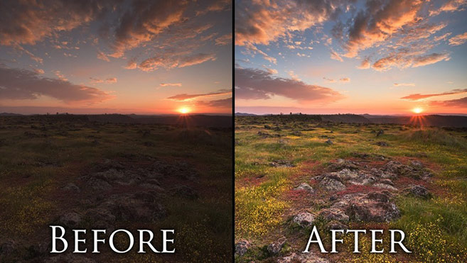

About
Welcome to my page dedicated to photo processing! My name is DS, and I am here to help you learn about photo processing techniques and tools that can enhance your photography skills.
On this page, you will find a wide range of topics related to photo processing, including image editing software, techniques for color correction, retouching, compositing, and much more. Whether you are a professional photographer or an amateur enthusiast, there is always something new to learn about photo processing.
Services
On this website, I also offer a variety of photo processing services to help you achieve your desired results. Whether you're looking for basic editing services or more advanced retouching and manipulation, I've got you covered.
Some of the services I offer include:
1. Basic editing: Adjusting brightness, contrast, saturation, and color balance to enhance the overall look of your photos.
2. Retouching: Removing blemishes, smoothing skin, and fixing any imperfections to make your subjects look their best.
3. Background removal: Removing distracting backgrounds and replacing them with something more fitting to the subject or scene.
4. Compositing: Combining multiple photos into one, creating a unique and interesting image.
5. Color grading: Adjusting the colors in your photos to create a specific mood or atmosphere.
